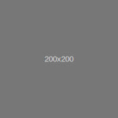

Title @example Toasted Pumpkin Seeds with Sugar and Spice
206 Views | 58 Favorites | 47 Upvotes | 2 Downvotes
 Recipe by Author Username
Short decription created when the recipe was posted will be here
Until their season runs out in late November, I�ll be the one buying fresh figs every time I go grocery shopping and eating them every way I can think of.
I can�t stop. My newest obsession is cooking them in balsamic vinegar with some red grapes to make an agrodolce�a sweet-and-sour sauce traditional to Italian cuisine�to use as a topping for a pan-seared pork chops.
To make this super-seasonal pork chop dinner, I start by searing small bone-in pork chops in a skillet to get a nice crust on them, then I toss them onto a sheet pan in a hot oven so I can use that skillet and all the nice little browned bits in it to make my agrodolce sauce while the chops finish cooking.
Agrodolce is traditionally made by reducing vinegar and sugar into a sauce. I use balsamic and a little bit of honey to make mine. I infuse it with fresh rosemary and some crushed red pepper flakes while it cooks with the figs and grapes in it (which also add their flavor and juices to the sauce), and then swirl in some cold butter at the end to thicken and emulsify it. I find it hard not to lick my plate clean of this sauce�it's really something special.
To balance out the sweet-tart flavors of the sauce and the richness of the meat, I serve the pork with a pleasantly bitter and bright radicchio and parsley salad. Start to finish, the whole meal comes together in about 40 minutes�fast enough for a weeknight, but fancy enough for company. And a very good reason to keep buying those fresh figs while you can.
 Username
Username